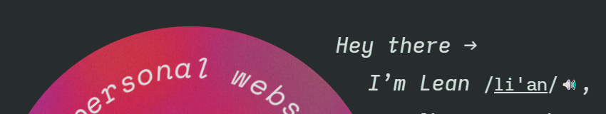

For quick and ‘dirty’ rendering of simple dynamic content, you may not need the complexity of a templating language with a preprocessing step like Handlebars or a server backend like PHP.
Let’s use the example phrase, “Come on, it’s <currentYear>”. It should result in “Come on, it’s ” when rendered today.
This dynamic phrase could be written directly in the HTML! We don’t even need element IDs, classes, or selectors to locate and modify the content. This is possible using the document.currentScript property, which gives us a reference to the current <script> element that’s running.
iirc, I learned about this technique from the Surreal library or something adjacent to it. I forgot.
Anyway, the dynamic phrase “Come on, it’s ” would now be written as:
Come on, it’s
<script>
document.currentScript.replaceWith(new Date().getFullYear())
</script>
The script simply replaces itself with its computed value on the spot.
The code’s a bit wordy though, but we can alias it to a constant like $ via $=(...n)=>document.currentScript.replaceWith(...n). Then we’d have something reminiscent of template literals in JS.
Come on, it’s <script>$(new Date().getFullYear())</script>
The code is pretty readable at a glance without context (after you get past the bit of indirection that is the $ alias).
A noscript fallback would also be nice for those that don’t run JS.
Come on, it’s
<noscript>current year</noscript>
<script>$(new Date().getFullYear())</script>
The resulting script-noscript juxtaposition in the markup looks almost like Angular/Vue’s if-else markup, neat.
Date().split` `[3] is also a short (but very hacky) way to get the year.
Real world examples
If you thought this technique is only useful for rendering the current year, you’re mostly right! — I’ve used inline scripts to refer to relative dates in my living pages. Because “ years ago” sounds more natural than “2017”.
It was planted
<noscript>in 2017</noscript>
<script>$(new Date().getFullYear()-2017, ' years ago')</script>
but now it has grown tall and strong.
It was planted
but now it has grown tall and strong.
Random greeting
Another example is in my front page, which says a randomly selected greeting on each visit.

<span class="intro-line">
<noscript>Hello!</noscript>
<script>
$([
"Hello!",
"Hey~~~",
"What’s up ↑",
"Hi there →",
"Hey there →",
][Date.now() % 5])
</script>
</span>
The randomiser is just a Date.now() with modulo because it was more concise than Math.floor(Math.random() * 5).
Splitting text for animation
I’ve split text into characters using inline scripts to generate markup per character. In my case, it was for rendering circular text, but a more common use case is text animation like the following.
It was extremely clunky but it worked. It was a
hack.
It was extremely clunky but it worked. It was a
<script>document.currentScript.outerHTML=
"crazy".replace(/./g, c => `<strong>${c}</strong>`)
</script>
hack.
Auto-updating footer
How about an auto-updating copyright notice in the footer which may or may not have legal implications? (IANAL)
<footer>
© <script>$(new Date().getFullYear())</script> Mycorp, Ltd.
</footer>
For comparison, here’s the StackOverflow/ChatGPT answer:
document
.getElementById("copyright-year")
.textContent = new Date().getFullYear();
<footer>
© <span id="copyright-year"></span> Mycorp, Ltd.
</footer>
Why pollute the global ID namespace and separate coupled code if we can avoid it?
At this point you may be asking, is this technique only really useful for rendering the current year? Maybe, but we can do more than just rendering text.
Come on, it’s , the web is rich and interactive!
The ubiquitous counter app example
This is not a simple templating example anymore, but shows the power of currentScript in hydrating self-contained bits of interactive HTML.
Count: 0
<div>
Count: <span>0</span>
<button>Increment</button>
<button>Decrement</button>
<script>
const [span, increment, decrement] =
document.currentScript.parentElement.children;
let count = 0;
increment.onclick = () => span.replaceChildren(++count);
decrement.onclick = () => span.replaceChildren(--count);
</script>
</div>
I used this ‘local script’ pattern all the time in a previous version of this blog. It’s useful when making interactive illustrations in the middle of a long post — You wouldn’t want to put that logic at the very end or start of the file, away from the relevant section! Unless you love scrolling, that is! Same goes for styles, now made even better with the @scope rule.
It’s a great way to keep isolated interactive bits manageable.
The catch
If you want to use an alias like $, you'd first have to define it at the top of the HTML, synchronously. Say you want to use this in multiple pages, so you put this in a common script file and load it via <script src="$.js"</script>. This could result in a parser- and render-blocking fetch — Potentially very bad for performance!
For my own cases, I don’t use the alias. I straight up just use document.currentScript.... Wish it was shorter…
Also, you cannot do data-driven templates this way. The title of this post is a misnomer — This inline scripting technique is not really a templating solution in the sense that you have templates to apply data onto. So if you have metadata such as date published, post title, and tags that are stored in some posts database table or in some frontmatter format somewhere, then how would you get this data in the client for inline scripting purposes? Fetching from inline scripts is a big no-no. Therefore, unless data is somehow pre-injected in the global scope, no luck in pure vanilla JS templating. Data-driven templates are where the real templating languages like Liquid really shine.
For my site, I don’t need a templating system as I use direct patching to data-drive my HTML (in which the source and the output files are the same).
Further reading
- Surreal - a library that offers this technique, plus other jQuery-style helpers. Note the synchronous script tag loading issue though!
- currentScript discussion in SvelteKit - this as an alternative to global IDs for self-hydrating things. In the end they went with generated IDs. :|
Appendix
document.write() used to (?) work like this for inline rendering, but it’s now deprecated because it had inconsistent behaviour.
Come on, it’s
<script>document.write(new Date().getFullYear())</script>,
stop using <code>document.write</code>!